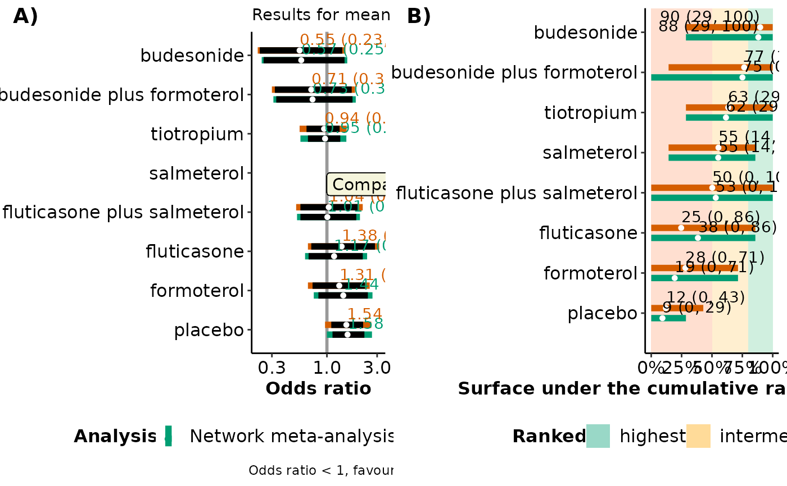

End-user-ready results for network meta-regression
Source:R/metareg.plot_function.R
metareg_plot.RdIllustrates the effect estimates, predictions and regression coefficients of comparisons with a specified comparator intervention for a selected covariate value and also exports these results to an Excel file.
Arguments
- full
- reg
An object of S3 class
run_metareg. See 'Value' inrun_metareg.- compar
A character to indicate the comparator intervention. It must be any name found in
drug_names.- cov_value
A list of two elements in the following order: a number for the covariate value of interest (see 'Arguments' in
run_metareg), and a character to indicate the name of the covariate. See also 'Details'.- drug_names
A vector of labels with the name of the interventions in the order they appear in the argument
dataofrun_model. Ifdrug_namesis not defined, the order of the interventions as they appear indatais used, instead.- save_xls
Logical to indicate whether to export the tabulated results to an 'xlsx' file (via the
write_xlsxfunction of the R-package writexl) at the working directory of the user. The default isFALSE(do not export).
Value
metareg_plot prints on the R console a message on the most
parsimonious model (if any) based on the DIC (in red text). Furthermore,
the function returns the following list of elements:
- table_estimates
The posterior median, and 95% credible interval of the summary effect measure (according to the argument
measuredefined inrun_model) for each comparison with the selected intervention under network meta-analysis and network meta-regression based on the specifiedcov_value.- table_predictions
The posterior median, and 95% prediction interval of the summary effect measure (according to the argument
measuredefined inrun_model) for each comparison with the selected intervention under network meta-analysis and network meta-regression based on the specifiedcov_value.- table_model_assessment
The DIC, total residual deviance, number of effective parameters, and the posterior median and 95% credible interval of between-trial standard deviation (tau) under each model (Spiegelhalter et al., 2002). When a fixed-effect model has been performed,
metareg_plotdoes not return results on tau. For a binary outcome, the results refer to the odds ratio scale.- table_regression_coeffients
The posterior median and 95% credible interval of the regression coefficient(s) (according to the argument
covar_assumptiondefined inrun_metareg). For a binary outcome, the results refer to the odds ratio scale.- interval_plot
A forest plot on the estimated and predicted effect sizes of comparisons with the selected comparator intervention under network meta-analysis and network meta-regression based on the specified
cov_valuealongside a forest plot with the corresponding SUCRA values. See 'Details' and 'Value' inforestplot_metareg.- sucra_scatterplot
A scatterplot of the SUCRA values from the network meta-analysis against the SUCRA values from the network meta-regression based on the specified
cov_value. See 'Details' and 'Value' inscatterplot_sucra.
Details
The deviance information criterion (DIC) of the network meta-analysis model is compared with the DIC of the network meta-regression model. If the difference in DIC exceeds 5, the network meta-regression model is preferred; if the difference in DIC is less than -5, the network meta-analysis model is preferred; otherwise, there is little to choose between the compared models.
When the covariate is binary, specify in the second element of
cov_value the name of the level for which the output will be
created.
Furthermore, metareg_plot exports all tabulated results to separate
'xlsx' files (via the write_xlsx function
of the R-package
writexl) to the working
directory of the user.
metareg_plot can be used only for a network of interventions. In the
case of two interventions, the execution of the function will be stopped
and an error message will be printed on the R console.
References
Salanti G, Ades AE, Ioannidis JP. Graphical methods and numerical summaries for presenting results from multiple-treatment meta-analysis: an overview and tutorial. J Clin Epidemiol 2011;64(2):163–71. doi: 10.1016/j.jclinepi.2010.03.016
Spiegelhalter DJ, Best NG, Carlin BP, van der Linde A. Bayesian measures of model complexity and fit. J R Stat Soc B 2002;64(4):583–616. doi: 10.1111/1467-9868.00353
Examples
data("nma.baker2009")
# \donttest{
# Read results from 'run_model' (using the default arguments)
res <- readRDS(system.file('extdata/res_baker.rds', package = 'rnmamod'))
# Read results from 'run_metareg' (exchangeable structure)
reg <- readRDS(system.file('extdata/reg_baker.rds', package = 'rnmamod'))
# Publication year as the covariate
pub_year <- c(1996, 1998, 1999, 2000, 2000, 2001, rep(2002, 5), 2003, 2003,
rep(2005, 4), 2006, 2006, 2007, 2007)
# The names of the interventions in the order they appear in the dataset
interv_names <- c("placebo", "budesonide", "budesonide plus formoterol",
"fluticasone", "fluticasone plus salmeterol",
"formoterol", "salmeterol", "tiotropium")
# Plot the results from both models for all comparisons with salmeterol and
# publication year 2000
metareg_plot(full = res,
reg = reg,
compar = "salmeterol",
cov_value = list(2000, "publication year"),
drug_names = interv_names)
#> There is little to choose between the two models
#> module glm loaded
#> module dic loaded
#> Compiling model graph
#> Resolving undeclared variables
#> Allocating nodes
#> Graph information:
#> Observed stochastic nodes: 0
#> Unobserved stochastic nodes: 7
#> Total graph size: 287
#>
#> Initializing model
#>
#> $table_estimates
#>
#>
#> Table: Estimation for comparisons with salmeterol for 2000
#>
#> |versus salmeterol | Median NMA | 95% CrI NMA | Median NMR | 95% CrI NMR |
#> |:---------------------------|:----------:|:-------------:|:----------:|:-------------:|
#> |budesonide | 0.57 | (0.25, 1.47) | 0.56 | (0.17, 1.85) |
#> |budesonide plus formoterol | 0.73 | (0.33, 1.75) | 0.72 | (0.22, 2.39) |
#> |tiotropium | 0.95 | (0.66, 1.34) | 1.01 | (0.63, 1.59) |
#> |fluticasone plus salmeterol | 1.01 | (0.56, 1.9) | 1.13 | (0.5, 2.55) |
#> |fluticasone | 1.17 | (0.67, 2.19) | 1.31 | (0.6, 2.86) |
#> |formoterol | 1.44 | (0.83, 2.45) | 1.21 | (0.57, 2.58) |
#> |placebo | 1.58 | (1.13, 2.27)* | 1.72 | (1.14, 2.61)* |
#>
#> $table_predictions
#>
#>
#> Table: Prediction for comparisons with salmeterol for 2000
#>
#> |versus salmeterol | Median NMA | 95% CrI NMA | Median NMR | 95% CrI NMR |
#> |:---------------------------|:----------:|:------------:|:----------:|:------------:|
#> |budesonide | 0.57 | (0.24, 1.56) | 0.56 | (0.16, 1.94) |
#> |budesonide plus formoterol | 0.73 | (0.31, 1.88) | 0.73 | (0.21, 2.51) |
#> |tiotropium | 0.96 | (0.56, 1.53) | 1.01 | (0.57, 1.78) |
#> |fluticasone plus salmeterol | 1.01 | (0.52, 2.06) | 1.13 | (0.47, 2.72) |
#> |fluticasone | 1.17 | (0.62, 2.41) | 1.31 | (0.56, 3.06) |
#> |formoterol | 1.43 | (0.75, 2.71) | 1.21 | (0.53, 2.77) |
#> |placebo | 1.57 | (1, 2.68) | 1.72 | (1, 2.93)* |
#>
#> $table_model_assessment
#>
#>
#> Table: Model assessment and between-trial standard deviation
#>
#> |Analysis | DIC | pD | Mean deviance | data points | Median tau | SD tau |95% CrI tau |
#> |:---------------------|:-----:|:-----:|:-------------:|:-----------:|:----------:|:------:|:------------|
#> |Network meta-analysis | 89.16 | 34.97 | 54.19 | 50 | 0.14 | 0.09 |(0.01, 0.35) |
#> |Meta-regression | 90.83 | 36.95 | 53.88 | 50 | 0.13 | 0.09 |(0.01, 0.36) |
#>
#> $table_regression_coeffients
#>
#>
#> Table: Estimation of regression coefficient(s)
#>
#> |versus salmeterol | Median beta|95% CrI beta |
#> |:---------------------------|-----------:|:------------|
#> |budesonide | 1.00|(0.73, 1.36) |
#> |budesonide plus formoterol | 1.00|(0.73, 1.36) |
#> |tiotropium | 0.98|(0.86, 1.07) |
#> |fluticasone plus salmeterol | 0.97|(0.76, 1.1) |
#> |fluticasone | 1.01|(0.9, 1.2) |
#> |formoterol | 1.03|(0.91, 1.33) |
#> |placebo | 0.96|(0.88, 1.05) |
#>
#> $interval_plot

#>
#> $sucra_scatterplot
#>
# }